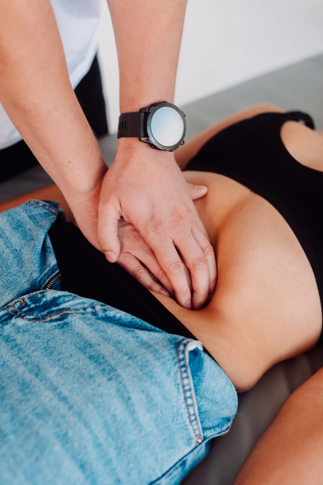

Do wypadku może dojść w różnych okolicznościach: w domu, w miejscu pracy, na ulicy. W wyniku splotu nieprzewidzianych zdarzeń, możesz doznać mniej lub bardziej poważnej szkody na zdrowiu.
Czasami skutki wypadku są niewielkie i po krótkim czasie wracasz do pełnej sprawności. Jednak w poważniejszych przypadkach konieczna może być długotrwała rehabilitacja powypadkowa, aby odzyskać pełnię zdrowia i sprawność. W takich sytuacjach kluczowe jest odpowiednie leczenie oraz wsparcie specjalistów, które pomagają w powrocie do normalnego funkcjonowania. Z pomocą przychodzi Uzdrovisko z Poznania - nowoczesna i holistyczna fizjoterapia i medycyna integracyjna.
Oferujemy skuteczną rehabilitację powypadkową. Fizjoterapeuci dążą do tego, aby pomóc pacjentom wrócić do zdrowia. Jeśli jednak w wyniku złożoności urazów całkowicie wyzdrowienie nie jest możliwe, robimy wszystko, aby mógł przynajmniej częściowo odzyskać sprawność. Opieka, którą obejmujemy pacjentów, jest stała, długofalowa, bo czas reakcji jest w ich przypadku najważniejszy.
Opiekujemy się osobami cierpiącymi z powodu blizn pooperacyjnych powstałych często w wyniku operacji ratujących życie po wypadku, mających zaburzenia koordynacji, zmagających się z bólem i ograniczoną ruchomością uszkodzonych części ciała.
Dowiedz się więcej o stosowanych w Uzdrovisku w Poznaniu metodach leczenia i wróć do pełni sił pod opieką doświadczonego rehabilitanta i fizjoterapeuty.
Rehabilitacja powypadkowa to intensywny proces terapeutyczny mający na celu przywrócenie pełnej lub częściowej sprawności fizycznej po urazach wynikających z wypadków komunikacyjnych, upadków czy innych zdarzeń losowych.
Obejmuje indywidualnie dobrane metody leczenia, które pomagają w regeneracji organizmu, redukcji bólu oraz poprawie zakresu ruchu. Odbywa się w Uzdrovisku w Poznaniu lub w Twoim domu, pod nadzorem doświadczonych fizjoterapeutów oraz rehabilitantów.
Zastanawiasz się, czy i kiedy jest właściwy moment na włączenie do rekonwalescencji rehabilitacji powypadkowej? Przy jakich urazach warto skorzystać z rehabilitacji powypadkowej, by skrócić rekonwalescencję? W Uzdrovisku obejmuje ona leczenie urazów takich jak:
Wspieramy również pacjentów, którzy doznali innego typu urazów przede wszystkim po wypadkach komunikacyjnych. Nie jesteś pewien, czy będziemy mogli Ci pomóc? Umów się na pierwszą konsultację do naszych doświadczonych specjalistów.
Proces rehabilitacji w Uzdrovisku w Poznaniu jest dostosowany do indywidualnych potrzeb pacjenta, opiera się w całości na wywiadzie medycznym i diagnozie postawionej przez naszego specjalistę.
W Uzdrovisku w Poznaniu stosujemy nowoczesne, holistyczne metody leczenia, które są uznawane za bezpieczne i wysoce skuteczne. Wśród nich jest:
W Uzdrovisku Fizjoterapii i Medycynie Integracyjnej oferujemy kompleksową rehabilitację powypadkową. Pacjenci, którzy do nas trafiają, w jednym miejscu otrzymują pomoc i wsparcie, które obejmuje:
Zadbaj o swoje zdrowie i sprawność po wypadku – skorzystaj z rehabilitacji powypadkowej w Uzdrovisku w Poznaniu. Skontaktuj się z nami, aby umówić wizytę, podczas której poznasz lepiej stosowane przez nas terapie, nasze podejście oraz rozwiązania Twoich problemów.
Co mówią o nas pacjenci